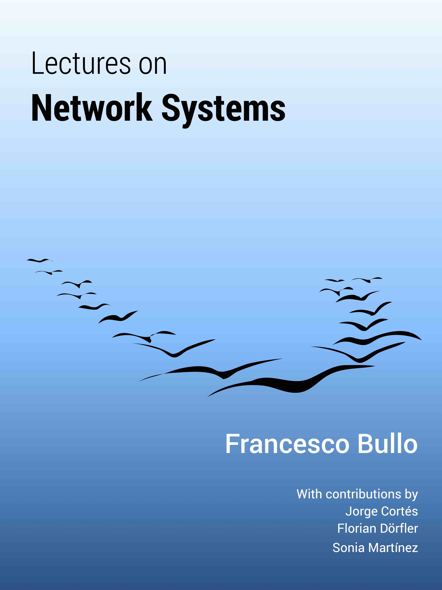
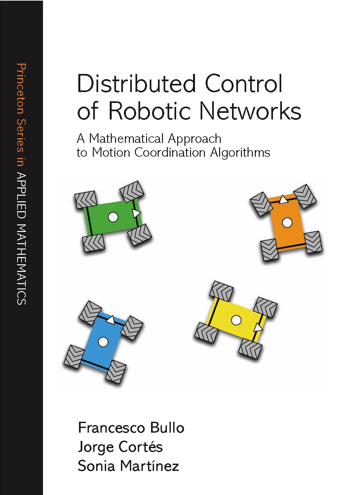
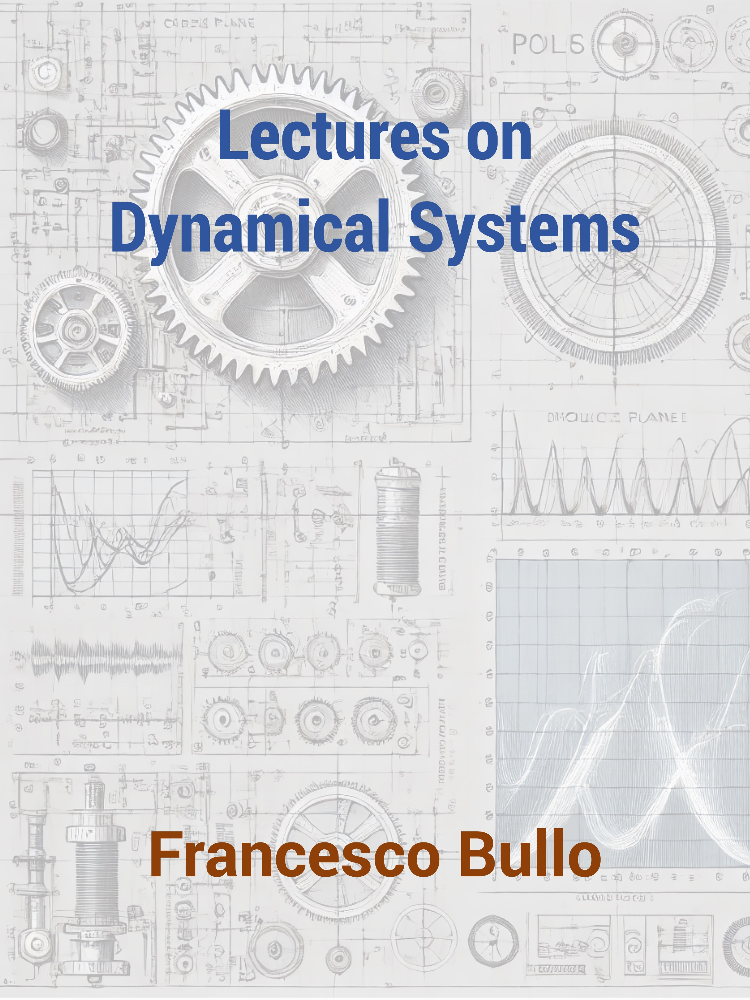
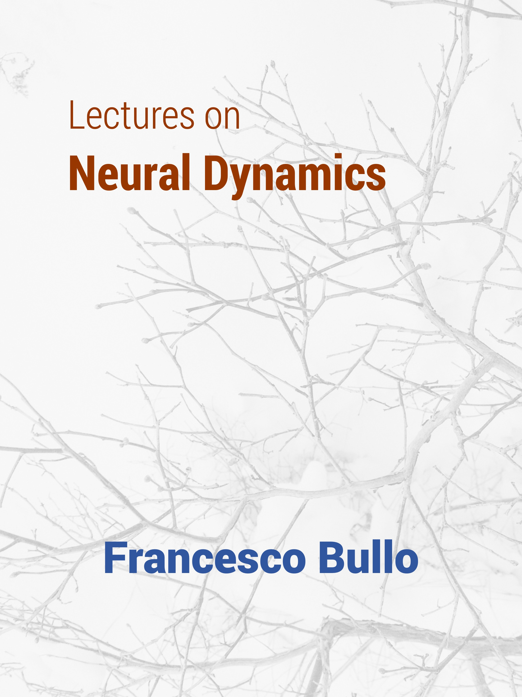
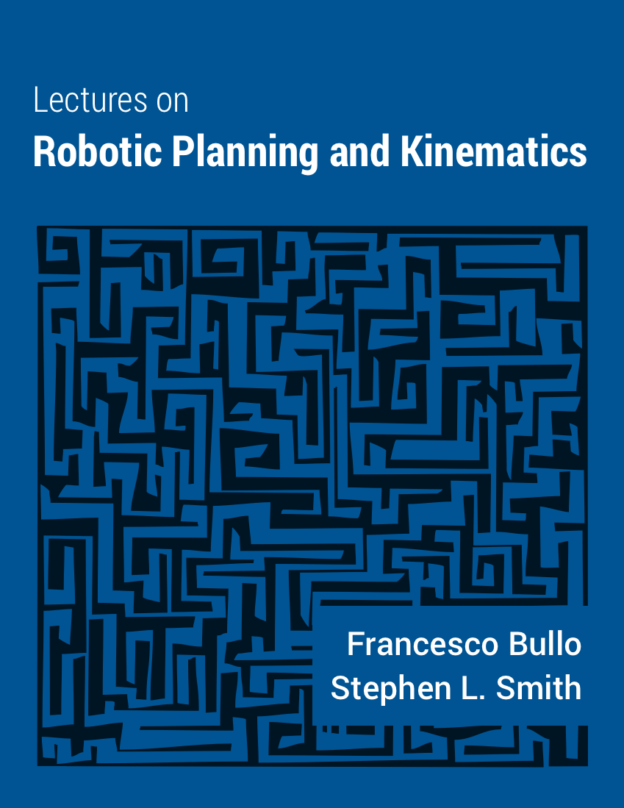

Professor Francesco Bullo - Books and Lecture Notes
Each title links to its own page, with the free downloads.
Books
Contraction Theory for Dynamical Systems
Contraction Theory for Dynamical Systems |
Lectures on Network Systems
|
 |
Lectures on Network Systems |
Distributed Control of Robotic Networks
|
 |
Distributed Control of Robotic Networks |
Geometric Control of Mechanical Systems
Geometric Control of Mechanical Systems |
Lecture notes
Lectures on Dynamical Systems
|
 |
Lectures on Dynamical Systems |
Lectures on Neural Dynamics
|
 |
Lectures on Neural Dynamics |
Lectures on Robotic Planning and Kinematics
|
 |
Lectures on Robotic Planning and Kinematics |